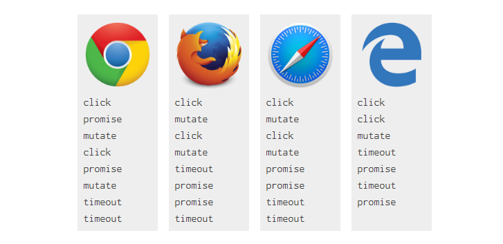

摘要： 理解JS的执行顺序。
console.log("script start");
setTimeout(function() {
console.log("setTimeout");
}, 0);
Promise.resolve()
.then(function() {
console.log("promise1");
})
.then(function() {
console.log("promise2");
});
console.log("script end");控制台打印的顺序是怎样的？
正确的答案是:script start, script end, promise1, promise2, setTimeout，但是由于浏览器实现支持不同导致结果也不一致。
Microsoft Edge、Firefox 40、iOS Safari和桌面Safari 8.0.8 打印promise1 和promise2之前会先打印 setTimeout —— 这似乎是浏览器厂商相互竞争导致的实现不同。这真的很奇怪，因为 Firefox 39 和 Safari 8.0.7 结果总是正确的。
要理解这一点，需要了解事件循环
每个“线程”都有自己的事件循环
事件循环持续运行，直到清空 Tasks 队列的任务。一个事件循环有多个任务源，这些任务源保证了该源中的执行顺序(比如IndexedDB定义了它们自己的规范)，但是浏览器可以在每次循环中选择哪个源来执行任务。这允许浏览器优先选择性能敏感的任务，比如用户输入等。
Tasks 被放到任务源中，这样浏览器就可以从内部进入JavaScript/DOM领域，并确保这些操作按顺序进行。在Tasks 执行期间，浏览器可能更新渲染。从鼠标点击到事件回调需要调度一个任务，解析超文本标记语言也是如此。
setTimeout迟给定的时间，然后为它的回调调度一个新任务。这就是为什么setTimeout在打印script end之后打印，因为打印script end是第一个任务的一部分，而setTimeout在一个单独的任务中。
微任务
只要没有其他JavaScript处于执行中期，并且在每个任务的末尾，微任务队列就在回调之后处理。在微任务期间排队的任何其他微任务都会被添加到队列的末尾并进行处理。微任务 包括 MutationObserver callbacks。例如上面的例子中的 promise 的 callback。
一个settled状态的promise 或者已经变成settled状态(异步请求被settled)的promise，会立刻将它的callback（then）放到微任务队列里面。
这确保了 promise 回调是异步的，即便promise已经变为settled状态。因此一个已settled的promise调用.then(yey,nay)时将立即把一个微任务加入微任务队列中。
这就是为什么promise1和promise2会在script end后打印，因为当前运行的脚本必须在处理微任务之前完成。promise1和promise2在setTimeout之前打印，因为微任务总是在下一个任务之前发生。
好，一步一步的运行：
一些浏览器的打印的顺序是 script start, script end, setTimeout, promise1, promise2。它们在setTimeout之后运行promise回调。很可能他们调用promise回调是作为新任务的一部分，而不是作为一个微任务。
这也是可以理解的，因为promise来自 ECMAScript 而不是 HTML。ECMAScript 有“作业”的概念，类似于微任务，但是除了模糊的邮件列表讨论之外，这种关系并不明确。然而，普遍的共识是，promise应该是微任务队列的一部分并且有充足的理由。
将promise 看作任务会导致性能问题，因为回调没有必要因为任务相关的事（比如渲染）而延迟执行。它还会由于与其他任务源的交互而导致非确定性，并可能中断与其他api的交互，稍后将详细介绍。
这里有一条 Edge 反馈，它错误地将 promises 当作 任务。WebKit nightly 做对了，所以我认为 Safari 最终会修复，而 Firefox 43 似乎已经修复。
动手试一试是一种办法，查看相对于promise和setTimeout如何打印，尽管这取决于实现是否正确。
一种方法是查看规范： 将一个任务加入队列： step 14 of setTimeout
将 microtask 加入队列：step 5 of queuing a mutation record
如上所述，ECMAScript 将微任务称为作业： 调用 EnqueueJob 将一个 微任务加入队列：step 8.a of PerformPromiseThen
下面是一段html代码：
<div class="outer">
<div class="inner"></div>
</div>给出下面的JS代码，如果点击div.inner将会打印出什么呢？
// Let's get hold of those elements
var outer = document.querySelector(".outer");
var inner = document.querySelector(".inner");
// Let's listen for attribute changes on the
// outer element
new MutationObserver(function() {
console.log("mutate");
}).observe(outer, {
attributes: true
});
// Here's a click listener…
function onClick() {
console.log("click");
setTimeout(function() {
console.log("timeout");
}, 0);
Promise.resolve().then(function() {
console.log("promise");
});
outer.setAttribute("data-random", Math.random());
}
// …which we'll attach to both elements
inner.addEventListener("click", onClick);
outer.addEventListener("click", onClick);在偷看答案前先试一试
和你猜想的有不同吗？如果是，你得到的结果可能也是正确的。不幸的是，浏览器实现并不统一，下面是各个浏览器下测试结果：

调度'click'事件是一项任务。 Mutation observer 和 promise 回调被列为微任务。 setTimeout 回调列为任务。 因此运行过程如下：
所以 Chrome 是对的。对我来说新发现是，微任务在回调之后运行（只要没有其它的 Javascript 在运行），我原以为它只能在一个任务的末尾执行。
对于 mutation callbacks，Firefox 和 Safari 都正确地在内部区域和外部区域单击事件之间执行完毕，清空了微任务队列，但是 promises 列队的处理看起来和chrome不一样。这多少情有可原，因为作业和微任务的关系不清楚，但是我仍然期望在事件回调之间处理 Firefox ticket. Safari ticket.
对于 Edge，我们已经看到它错误的将 promises 当作任务，它也没有在单击回调之间清空微任务队列，而是在所有单击回调执行完之后清空，于是总共只有一个 mutate 在两个 click 之后打印。
仍然使用上面的例子，假如我们运行下面代码会怎么样：
inner.click();跟之前一样，它会触发 click 事件，但这次是通过 JS 调用的。
下面是各个浏览器的运行情况：
我发誓我一直在从Chrome中得到不同的结果，我已经更新了这张图表很多次了，我以为我在错误地测试Canary。如果你在Chrome中得到不同的结果，请在评论中告诉我是哪个版本。
应该是这样的:
所以正确的顺序是：click, click, promise, mutate, promise, timeout, timeout，似乎 Chrome 是对的。
以前，这意味着微任务在侦听器回调之间运行，但.click()会导致事件同步调度，因此调用.click()的脚本仍然在回调之间的堆栈中。 上述规则确保微任务不会中断执行中期的JavaScript。 这意味着我们不处理侦听器回调之间的微任务队列，它们在两个侦听器之后处理。
任务按顺序执行，浏览器可以在它们之间进行渲染：
微任务按顺序执行，并执行：
Fundebug专注于JavaScript、微信小程序、微信小游戏、支付宝小程序、React Native、Node.js和Java线上应用实时BUG监控。 自从2016年双十一正式上线，Fundebug累计处理了10亿+错误事件，付费客户有阳光保险、核桃编程、荔枝FM、掌门1对1、微脉、青团社等众多品牌企业。欢迎大家免费试用！